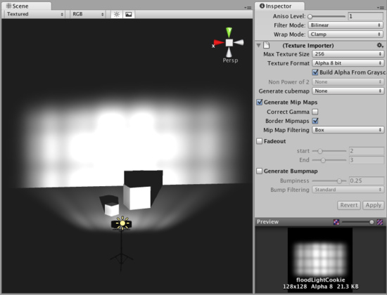

How do I make a Spot Light Cookie?
Unity ships with a few Light Cookies in the Standard Assets. When the Standard Assets are imported to your project, they can be found in . This page shows you how to create your own.
A great way to add a lot of visual detail to your scenes is to use cookies - grayscale textures you use to control the precise look of in-game lighting. This is fantastic for making moving clouds and giving an impression of dense foilage. The Light Component Reference page has more info on all this, but the main thing is that for textures to be usable for cookies, the following properties need to be set:
To create a light cookie for a spot light:
- Paint a cookie texture in Photoshop. The image should be greyscale. White pixels means full lighting intensity, black pixels mean no lighting. The borders of the texture need to be completely black, otherwise the light will appear to leak outside of the spotlight.
- In the Texture Inspector change the Repeat Wrap mode to Clamp
- Select the Texture and edit the following Import Settings in the Inspector.
- Enable Border Mipmaps
- Enable Build Alpha From Grayscale (this way you can make a grayscale cookie and Unity converts it to an alpha map automatically)
- Set the Texture Format to Alpha 8 Bit
